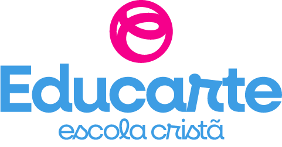

Privacidade nos Jogos do Rabisco
Versão do termo: 6 de novembro de 2026
Resumo: o cadastro (nome, telefone e e-mail do responsável; primeiro nome e data de nascimento das crianças) fica neste aparelho e é guardado no servidor da Educarte, para contato, suporte e pedidos de opinião. O progresso nos jogos fica só neste aparelho e nunca é enviado. Você pode apagar tudo quando quiser.
Quem cuida dos dados
Educarte Escola Cristã, [CNPJ], [endereço da escola]. Encarregado de dados (LGPD): [nome do encarregado].
Fale com a gente: 💬 WhatsApp (47) 99923-6042 · E-mail: [e-mail da escola]
O que guardamos
- Do responsável: nome completo, telefone e e-mail; e um PIN de 4 números para a Área dos pais (guardado embaralhado e só neste aparelho).
- De cada jogador: primeiro nome, data de nascimento e se é menina ou menino (para a narradora falar "pronta" ou "pronto").
- Progresso nos jogos: moedas (Rabiscoins), casa, álbum, missões, estrelas e recordes de cada jogador. Só neste aparelho.
- Seus consentimentos: a data e a hora em que você autorizou, a versão deste termo e se aceitou receber novidades.
Não pedimos CPF, RG, endereço nem localização.
Onde fica
- Neste aparelho (armazenamento do navegador): cadastro, perfis e progresso. Se apagar os dados do navegador, isso some do aparelho.
- No servidor da Educarte: só o cadastro (responsável, primeiro nome e nascimento das crianças, consentimentos) e um código do aparelho para atualizar o cadastro sem duplicar. Sem o progresso.
Evite cadastrar em aparelho compartilhado da escola ou de outras pessoas.
Para que usamos
- Para o Rabisco e a narradora chamarem cada criança pelo nome e cada filho ter o seu próprio progresso ("Quem vai jogar?").
- Para ajustar alguns jogos à idade.
- Para falar com você: suporte, dúvidas e avisos importantes sobre os jogos.
- Novidades e pedidos de opinião da Educarte pelo WhatsApp ou e-mail: só se você marcar essa opção (é separada e opcional; dá para cancelar quando quiser).
Não vendemos nem passamos os seus dados para outras empresas.
O que mais passa pela internet
- Voz com o nome: para a narradora falar o nome, o aparelho busca no nosso servidor a gravação daquele primeiro nome (ex.: "Alice").
- Jogar em dupla pelo celular: o código da sala e o apelido do jogador 2 passam pelo servidor da Educarte só durante a partida.
- Letras: o tipo de letra da tela vem do Google Fonts.
Por quanto tempo
No aparelho: até você apagar. No servidor da Educarte: enquanto a família usar os jogos ou até você pedir a exclusão. [Prazo máximo de guarda definido pela escola.]
Seus direitos
Você pode ver, corrigir e apagar os dados a qualquer momento, e retirar as autorizações:
- Ver e corrigir: Área dos pais → "Editar cadastro e PIN" ou "Editar" no jogador (a correção também vai para o servidor).
- Parar de receber novidades: Área dos pais → "Editar cadastro e PIN" e desmarque, ou peça pelo WhatsApp.
- Apagar um jogador: Área dos pais → "Apagar" no jogador.
- Apagar tudo: Área dos pais → "Apagar todos os dados deste aparelho". Isso apaga o aparelho e também pede ao servidor da Educarte para apagar o seu cadastro.
- Pedir exclusão ou tirar dúvidas pelo WhatsApp (47) 99923-6042.
A Área dos pais fica no botão do jogador (topo do portal) ou no ⚙️ dos jogos → "Quem vai jogar?" → "Área dos pais", e pede o PIN.
Crianças
O cadastro é feito pelo pai, pela mãe ou pelo responsável legal, que autoriza de forma específica e separada (Lei 13.709/2018, art. 14). Os jogos não têm chat e não vendem nada com dinheiro de verdade.